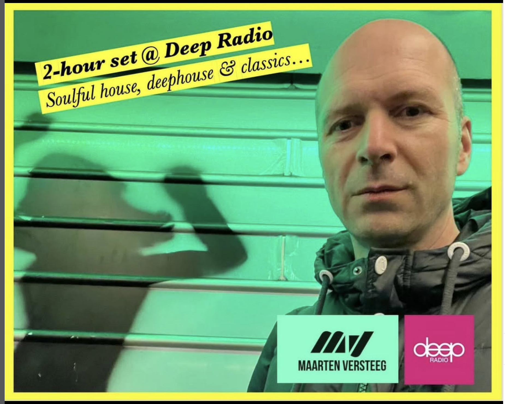

DE OPDRACHT
Maarten Versteeg mixt op verzoek regelmatig DJ-sets voor radiostations, zoals Deep Radio. Ook ontwikkelt hij Spotify-playlists op maat voor cafés en bars, muzikaal en zonder generieke AI-sounds die muziekplatforms overspoelen.

Maarten Versteeg mixt op verzoek regelmatig DJ-sets voor radiostations, zoals Deep Radio. Ook ontwikkelt hij Spotify-playlists op maat voor cafés en bars, muzikaal en zonder generieke AI-sounds die muziekplatforms overspoelen.
De mixes bewegen tussen soulful house, deephouse, afro, latin, disco en houseclassics. Een selectie is te beluisteren op SoundCloud. In toekomstige uitzendingen zal Maarten ook eigen producties introduceren.
Deep Radio: “Luisteraars geven positieve feedback over de variatie, de mix van oud en nieuw en de ‘storytelling’-stijl in strakke mixes”
Zoiets voor jouw event?
Stel je vraag via WhatsApp→